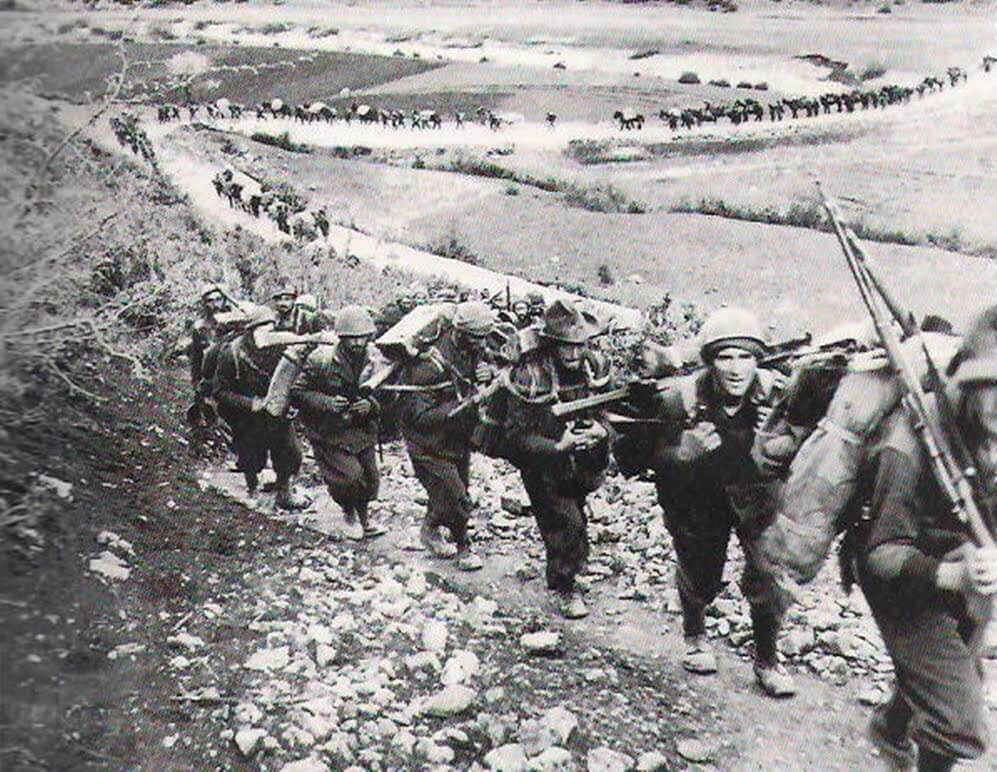
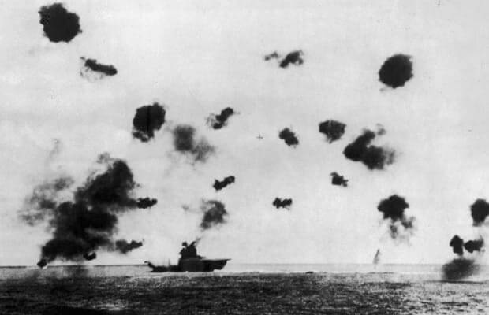

“Se partirmos do princípio que a Alemanha precisa sofrer na pobreza e suas
crianças passarem fome, eu prevejo vingança”
- John Maynard Keynes, Economista
Inglês, em 1919, após a assinatura do Tratado
de Versalhes.
20 anos depois da derrota alemã na Primeira Guerra Mundial, Hitler estava
pronto para uma revanche.
Primeiros meses da guerra
No dia 1 de setembro de 1939, a
Alemanha invade a Polônia, dois
dias depois, França e Reino Unido
declaram guerra à Alemanha.
Usando a tática Blitzkrieg, Hitler
conquista rapidamente boa parte
da Polônia , ao mesmo tempo, por
causa do pacto MolotovRibbentrop, os soviéticos começam
a invadir a Polônia também, em
menos de um mês, a Polônia se
rende, devido ao pacto MolotovRibbentrop, o país é dividido entre
Alemanha e União soviética.
Após isso, a guerra fica parada por alguns meses, nesse intervalo, a União
Soviética invade a Finlândia, dando Início a Guerra de Inverno.
Jornal britânico relatando a declaração de guerra.Polônia dividida entre alemães (amarelo) e soviéticos (vermelho).
1940
Alemanha contra a Europa
ocidental.
Fim da Guerra de Inverno
Em 12 de março a Guerra de Inverno chega ao fim, é assinado um acordo, a
união soviética poderia ficar com 10% do território finlandês e 20% da
capacidade industrial da Finlândia em troca da paz.
Invasão alemã em países da europa ocidental
A tática Blitzkrieg se
mostrou muito eficiente
contra a Polônia, com isso,
a Alemanha começa a
invadir a Europa ocidental,
em 9 de abril, a Alemanha
invade Dinamarca e
Noruega, Dinamarca se
rende no dia seguinte, a
Noruega resistiria por mais
um tempo, mas se renderia
dois meses depois.
Entre 10 e 28 de maio, Alemanha conquista Luxemburgo, Holanda e Bélgica,
mas o grande triunfo de Hitler era a França, como Hitler já esperava que os
franceses fossem manter posição nas fronteiras com a Bélgica, Hitler manda o
exército alemão ultrapassar uma floresta ao lado, franceses e britânicos não
esperavam por isso e acabam sendo encurralados e forçados a recuar, com
isso, os alemães ficam mais próximos de Paris. No dia 10 de junho, a Itália
declara guerra à França e começa a invadir o sul do país, entrando oficialmente
na guerra, quatro dias depois, as tropas alemãs marcham nas ruas de Paris, a
suástica é hasteada na Torre Eiffel e a França se rende a Hitler.
Hitler em Paris, após a derrota francesa.
A França assinaria um tratado de paz no dia 28 de junho, no mesmo trem em
que os alemães assinarem a sua rendição, em 1918, na Primeira Guerra
Mundial. Com a derrota da França, o país é dividido em duas partes, uma parte
sendo um território para a Alemanha e a outra administrada pelo governo
francês, Alemanha também anexa a região de Alsácia-Lorena.
Membros do governo francês assinando o tratado de paz.
Batalhas nos céus
Com a derrota da França, a Alemanha começa a usar o território francês para
bombardear cidades britânicas, principalmente Londres. Para Hitler iniciar uma
operação de mandar paraquedistas invadirem a Inglaterra, ele precisaria que a
Luftwaffe tivesse superioridade nos céus britânicos, com isso, se inicia a
Batalha da Grã-Bretanha, uma batalha travada exclusivamente entre aviões,
com ajuda de uma nova tecnologia, o radar, a Inglaterra consegue derrotar a
Luftwaffe, impedindo Hitler de invadir a ilha da Grã-Bretanha.
Luftwaffe, durante a Batalha da Grã-Bretanha.
Campanha italiana no Norte da África e Bálcãs
Mussolini tinha planos ambiciosos no Norte da África, então em 9 de setembro,
através da Líbia, tropas italianas começam a invadir o Egito, que na época era
controlado pelo Império Britânico. Em 28 de outubro, visando os territórios do
Bálcãs, a Itália envia tropas para invadir a Grécia, através da Albânia (país
conquistado antes da guerra).
Blindados italianos invadindo o Egito.

Tropas italianas invadindo a Grécia.
O Eixo
No dia 27 de setembro, Alemanha, Itália e Japão assinam o Pacto Tripartite,
uma aliança de defesa mútua, nascendo assim, o Eixo. Em 23 de novembro, a
Eslováquia, Hungria e Romênia se juntariam à aliança, no ano seguinte, a
Bulgária se juntaria ao Eixo. Esse pacto também tinha a função de intimidar e
evitar a entrada dos Estados Unidos na guerra.
Assinatura do Pacto Tripartite.
Fracasso nas campanhas italianas
No Norte da África, os italianos atacaram com 236 mil soldados, mas
acabaram perdendo para apenas 36 mil soldados britânicos e foram expulsos
do Egito e forçados a recuar para a Líbia.
Nos Bálcãs, mesmo com superioridade numérica, foram derrotados pela
Grécia, os gregos, com ajuda britânica, contra-atacaram e forçaram os italianos a recuar para a
Albânia, o exército Grego começa a empurrar os italianos através da Albânia,
algum tempo depois, os italianos já haviam perdido ¼ da Albânia.
Ilustração satirizando a derrota italiana para a Grécia.
1941
Com a guerra esquentando cada vez mais, Inglaterra consegue novos aliados.
Ajuda alemã nas campanhas italianas
Com o fracasso italiano no norte da África,
Hitler envia a força expedicionária “Afrika
Korps” para ajudar as tropas italianas.
Nos Bálcãs, a Alemanha começa a ajudar
As tropas italianas presentes na Albânia,
Apesar da ajuda britânica, a Grécia não
resiste e se rende.
Símbolo da Afrika Korps.
Soldados alemães em Atenas.
Invasão da Iugoslávia
No dia 6 de abril, Alemanha, Itália, Hungria e Bulgária invadem a Iugoslávia,
pouco tempo depois, a Iugoslávia se rende, com isso, o país é dividido entre
vários países.
Com a rendição, a Iugoslávia foi dividida em outros países.
Operação Barbarossa
Hitler X Stalin
Com toda Europa ocidental em seu controle (menos o Reino Unido), Hitler dá
início a Operação Barbarossa, que tinha como objetivo, invadir a União
Soviética, então, em 22 de junho, rompendo o pacto que havia feito com Stalin,
um exército de 4 milhões de soldados alemães, italianos, húngaros e romenos
começa a invadir a União Soviética, a Finlândia não era exatamente parte do
Eixo, mas visando recuperar seus territórios perdidos na Guerra de Inverno,
se junta a invasão. Esses eram os grande objetivos de Hitler, derrotar os comunistas
e conseguir o vasto território soviético, o motivo de Hitler ter feito o pacto com
Stalin era simplesmente para poder invadir a Polônia
sem precisar se preocupar com alguma interferência dos soviéticos. Com
isso, os soviéticos entram na guerra ao lado do Reino Unido.
No início da invasão, as forças do Eixo começam a invadir e
conquistar os países bálticos. Após isso, o exército se divide em três direções,
a primeira iria para cidade de Leningrado e faria um cerco na cidade, a
segunda iria para a capital Moscou e a terceira iria para Kiev, cidade da
Ucrânia. Como o território soviético era muito vasto, o exército do Eixo
começou a ficar sem suprimentos, então passaram a pegar os suprimentos das
terras que iam conquistando, Stalin percebendo isso, manda os camponeses
abandonarem suas terras e queimarem tudo, para que os alemães não
encontrassem comida, isso ficou conhecido como “Terra arrasada”, e
funcionou, deixando as tropas alemãs cada vez mais cansadas, além disso, o
inverno estava chegando.
O General Inverno
O inverno russo já era algo bem conhecido na época, pois já havia derrotado o
exército de Napoleão Bonaparte e os otomanos em algumas batalhas na
Primeira Guerra Mundial, pensando nisso, os generais de Hitler estudaram o
fracasso de Napoleão Bonaparte na sua campanha contra a Rússia, por isso, a
Operação Barbarossa iniciou antes do inverno começar, mas surgiram alguns
problemas, para poder ajudar Mussolini contra a Grécia, Hitler precisou adiar a
operação em um mês, o tamanho da União Soviético acabou prejudicando os
alemães, pois estavam acostumados a invasões rápidas, mas devido ao
tamanho do país, isso não foi possível, o que acabou atrasando os planos de
conquistar rapidamente a União Soviética, cientes que derrotariam os
soviéticos antes do inverno chegar, as tropas alemãs não possuíam roupas
específicas para o inverno, e muitos acabaram morrendo
congelados, devido a intensa neve formada, trouxe outros
problemas para as tropas alemãs, a infantaria alemã
Não conseguia usar o elemento surpresa devido ao
som dos passos se propagar mais devido a neve, além
disso, armas e veículos precisam de lubrificante
especial para funcionarem em temperaturas baixas.
Soldados alemães durante o inverno russo.
Japão ataca de surpresa
Conforme foi conquistando mais ilhas, o Japão continua se aumentando o seu
império por toda a Ásia e Oceania, a ponto de se tornar uma ameaça para a
Austrália, vendo isso, os Estados Unidos imediatamente interrompem o
comércio que faziam com os japoneses, os americanos vendiam bastante
materiais, mas avisaram que só voltariam a negociar se os japoneses
parassem de se expandir rumo a Austrália e saíssem da China,
os japoneses não concordaram com isso e planejaram um
ataque para destruir a frota naval dos americanos no
pacífico. Em 7 de dezembro, o Japão lança um ataque na
base naval norte-americana de Pearl Harbor, no Havaí,
atacando com 6 porta-aviões, 30 submarinos, muitos navios
de guerra e 400 aviões. O ataque durou cerca de 1h30min, quase 2500 pessoas morreram, além de vários
aviões e navios que
estavam na base terem sido inutilizados ou destruídos. Por essa atitude dos
japoneses, os Estados Unidos declaram guerra ao Eixo, entrando oficialmente
na guerra.
Japão ataca Pearl Harbor.
1942
A guerra começa a virar.
Aliados
Com a entrada dos Estados Unidos na guerra, é criada uma nova aliança, os
aliados (também chamada de Nações Unidas), tendo Estados Unidos, Reino
Unido e União Soviética como principais potências, nos anos seguintes, mais
países se juntariam a aliança.
Cartaz simbolizando a aliança.
Solução Final
Os judeus já eram perseguidos desde o início do governo de Hitler, em 1934,
até então, os nazistas mandavam judeus para guetos ou matavam todos a tiros
enquanto invadiam (método usado durante a invasão na União Soviética). Em
1942 os nazistas começam a pôr em prática o que ficou conhecido como
“Solução final”, que seria um plano para mandar todos os judeus para campos
de concentração/campos de extermínio para serem mortos em câmaras de
gás.
Campo de concentração de Auschwitz, na Polônia, estima-se que só nesse lugar foram mortos
cerca de
1,3 milhões de judeus.
A guerra no Pacífico
Após o ataque a Pearl Harbor, os japoneses continuaram conquistando mais
ilhas no Pacífico, como Cingapura e Filipinas.
Um dos objetivos principais dos japoneses no ataque a Pearl Harbor era
destruir toda a marinha dos americanos no Pacífico, como não conseguiram,
resolveram emboscar a marinha americana no atol de Midway, mas os
americanos interceptaram algumas mensagens e descobriram que os
japoneses iriam atacar, então se prepararam, quando o Japão iniciou o ataque,
os americanos já estavam atirando nos aviões japoneses, logo depois, chegam
os reforços dos americanos e iniciam um contra-ataque nos aviões, porta-aviões e navios japoneses, assim,
impedindo o plano do Japão. Depois disso,
os americanos desembarcaram em Guadalcanal e derrotaram as tropas
japonesas que estavam lá, assegurando suprimentos e acabando com
qualquer ofensiva do Japão no Pacífico. Essa vitória americana marca o início
da virada na guerra no Pacífico.

Batalha de Midway.
Batalha de Stalingrado
Após uma nova ofensiva alemã contra a União Soviética, as tropas acabaram
chegando e conquistando a cidade de Stalingrado. os soviéticos sabiam da
importância de defender a cidade, por isso, mobilizaram um exército gigante e
começaram a atacar os alemães, usando o inverno e armamentos antitanques
para quebrar a tática Blizkrieg. Durante a batalha, Stalin proibiu que os
moradores abandonassem a cidade, achando que isso iria encorajar o exército
vermelho. Essa batalha também marca o lema “Nenhum passo para trás” dos
soviéticos, qualquer soldado que tentasse recuar seria morto por traição. Essa
vitória dos soviéticos forçou os nazistas a recuarem, depois dessa derrota, os
alemães não conseguiram mais recuperar os territórios perdidos na União
Soviética.
Para mais detalhes sobre a Batalha de Stalingrado, clique aqui.
Batalha de Stalingrado.
1943
A guerra vira a favor dos aliados.
Fim da guerra no Norte da África
No fim de 1942, depois da Segunda Batalha De El Alamein, os aliados
conseguem empurrar as forças do Eixo para a Tunísia, em 1943, as últimas
tropas do Eixo se rendem, dando fim à guerra no norte da África. Depois dessa
vitória, os aliados podiam começar a invadir o sul da Europa.
Segunda Batalha De El Alamein.
Batalha de Kursk
Em uma nova tentativa de retomar a ofensiva contra a União Soviética, os
alemães iniciam um novo ataque com 800 mil soldados e 3 mil tanques, mas os
soviéticos descobriram aonde os alemães pretendiam atacar e mobilizaram um
exército de 2 milhões de soldados e cerca de 5 mil tanques, os soviéticos
começaram se defendendo e resistindo aos ataques, logo depois, iniciam dois
contra-ataques, derrotando os nazistas. Essa derrota foi a primeira vez que
uma ofensiva nazista foi interrompida antes que as linhas inimigas fossem
rompidas, depois dessa derrota, os alemães nunca mais conseguiram uma
nova ofensiva contra os soviéticos.
Batalha de Kursk, a maior batalha de tanques na história.
Mussolini preso
Com o norte da África livre, os
aliados começam a invadir o sul
da Itália, muitos italianos,
principalmente do governo, não
gostavam dessa guerra e iniciam
conversas de paz com os
aliados, mas não antes de tirar
Mussolini do poder e prendê-lo
em um hotel, nas montanhas.
Após isso, os italianos se rendem
aos aliados e declaram guerra à
Alemanha.
Hitler, já prevendo isso, inicia
uma operação para retirar
Mussolini da prisão, invade o norte da
Itália e deixa Mussolini no comando.
Hotel Campo Imperatore, local em que Mussolini foi
preso.
Itália dividida entre a República social italiana (verde), estado fantoche da Alemanha e o
reino da Itália
(rosa), apoiada pelos aliados.
1944
A derrota do Eixo é iminente.
Dia D
Tropas aliadas desembarcando nas praias da
Normandia.
Nesse ponto, alguns países, como a
Grécia, já haviam sido libertados
Do Controle Alemão, mas restava
Vários ainda.
Os aliados começam uma operação
para libertar a Europa ocidental do
controle alemão, então foi criada a
Força Expedicionária Aliada, essas
tropas desembarcam, no dia 6 de
junho, nas praias da Normandia,
região da França, de início, os
aliados não conseguem cumprir
alguns objetivos, mas até o fim da
operação, conseguem libertar boa
parte da França, mas restava Paris.
Para saber mais sobre o Dia D,
clique aqui.
Em 25 de agosto, as tropas anglo-americanas, junto com a resistência
francesa, conseguem libertar Paris do domínio alemão. Até o fim do ano, os
Aliados já haviam conseguido libertar outros países como Bélgica e Holanda.
Paris libertada pelos aliados.
Ofensiva Soviética
Os soviéticos começam a empurrar os alemães, recuperando o controle sobre
a Ucrânia e países bálticos, logo depois começam a invadir a Romênia, que
imediatamente troca de lado na guerra. Com a troca de lado da Romênia, a
Bulgária acaba se rendendo, a Finlândia assina um armistício com a União
Soviética, acabando sua parceria com o Eixo. No início de 1945, os soviéticos
iriam derrotar as tropas alemãs em Varsóvia, capital da Polônia, com isso,
iniciam uma ofensiva rumo a Berlim, mas do outro lado, os aliados também se
aproximavam da fronteira alemã, assim, se inicia a “Marcha para Berlim”, um
tipo de ‘corrida’ entre União Soviética, Reino Unido e Estados Unidos, para ver
quem seria o primeiro a chegar na capital alemã.
1945
O fim da maior de todas as guerras.
Morte de Mussolini
Pouco antes da Alemanha ser cercada pelos soviéticos, Mussolini é capturado
por membros da resistência italiana e é morto, seu corpo foi pendurado e
exposto em Milão.
Mussolini e sua esposa mortos.
Batalha de Berlim
Os primeiros a chegar em Berlim foram os soviéticos, que imediatamente
iniciam um cerco a cidade, como não havia mais soldados para lutarem pela
Alemanha, os moradores da cidade foram enviados para lutar contra os
soviéticos, mulheres, crianças e idosos, quem tentasse fugir, seria executado
por traição. Em algumas semanas, os soviéticos cercam e tomam o Reichstag
(sede do parlamento alemão), apenas algumas horas depois, Adolf Hitler
comete suicídio, os novos comandantes da Alemanha imediatamente anunciam
sua rendição, o tratado de paz seria assinado em alguns dias.
Soviéticos posicionando a bandeira vermelha no Reichstag.
Hitler comete suicídio
Com os soviéticos cercando Berlim, Hitler se
esconde dentro de um bunker junto com sua
recém esposa, Eva Braun, em 30 de
abril, comete suicídio junto com sua esposa,
para seu corpo não servir de troféu, ele
pediu para que seus assistentes queimasse o corpo dele,
após a sua morte.
Jornal americano relatando a
morte de Hitler.
Rendição alemã
Em 7 de maio, os oficiais alemães se rendem aos aliados ocidentais, Stalin se
irritou pela rendição alemã ter sido sob direção dos americanos, então exige
uma nova rendição e que o documento seja assinado em Berlim, o que
aconteceu de fato, isso marca o fim da guerra na Europa.
O dia do fim da Guerra da Europa gera discussões, pois o cessar-fogo estava
previsto para 23h do dia 7 de maio, mas nos relógios soviéticos, já era 2h da
manhã, ou seja, dia 8.
Alemanha se rende aos aliados ocidentais.Alemanha se rende aos soviéticos.
A guerra continua no Pacífico
Após a guerra acabar na Europa, os americanos continuavam conquistando
mais ilhas no Pacífico, em agosto, a União Soviética declara guerra
ao Japão e invade a região da Manchúria, enquanto os aliados exigem uma rendição do Japão,
com a recusa dos japoneses, os aliados pensaram em três alternativas,
poderiam reformular os termos de rendição, poderiam invadir o Japão ou os americanos
poderiam testar o “Projeto Manhattan”.
Projeto Manhattan
Em 6 de agosto, um avião soltou uma bomba atômica na cidade de Hiroshima,
matando 80 mil civis, mesmo assim, os japoneses se recusam a se render, por
isso, três dias depois, os americanos lançam outra bomba atômica, dessa vez
na cidade de Nagasaki, matando 40 mil pessoas. No dia 12 de agosto, o Japão
se rende, mas só assinaria o tratado de paz no dia 2 de setembro, desse jeito,
dando fim à Segunda Guerra Mundial.
Bomba atômica em Hiroshima (esquerda) e Nagasaki (direita).